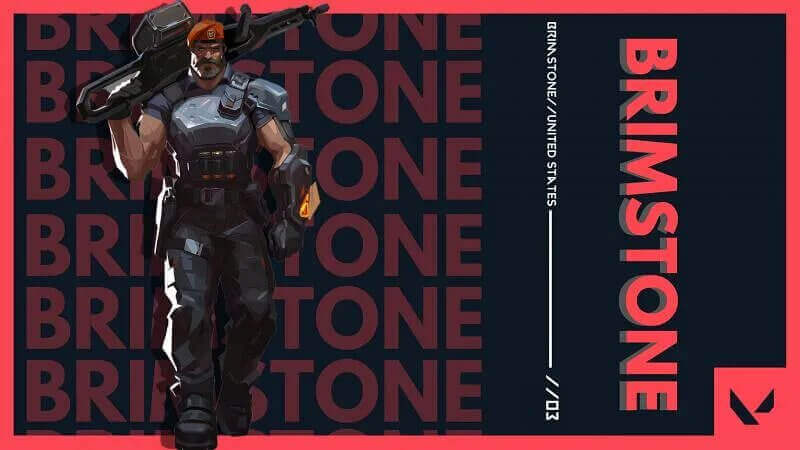
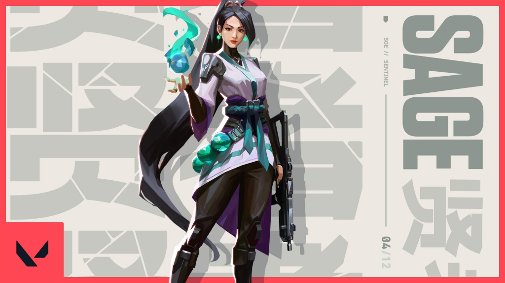

Valorant is a free-to-play first-person hero shooter developed and published by Riot Games, for Microsoft Windows. First teased under the codename Project A in October 2019, the game began a closed beta period with limited access on April 7, 2020, followed by an official release on June 2, 2020.
 Above are the pictures of Brimstone and Sage, 2 of the originally released charaters.
Above are the pictures of Astra, Kay/o and KillJoy, 3 of the recently added characters.